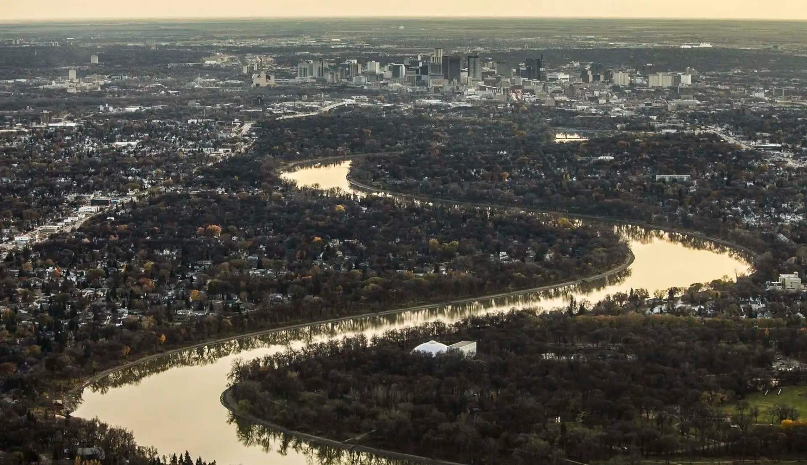

The river that built Winnipeg — and the river now threatened by it.
For thousands of years, people gathered around these waters. Today, billions of litres of wastewater flow through the same river system.

A journey through six millennia of human connection to these waters.
6,000+ YEARS AGO
For over six thousand years, Indigenous nations — the Anishinaabe, Cree, Oji-Cree, Dakota, and Métis — depended on this river. Sturgeon, catfish, and goldeye filled nets and sustained seasonal camps. The river's rhythm determined calendars — when to harvest, when to move, when to gather.
Where the Red and Assiniboine rivers converge, The Forks was already a gathering place for thousands of years. Trade, ceremony, diplomacy, and seasonal gatherings happened here long before European contact. The rivers were highways—birch bark canoes carried goods and stories across interconnected waterways. This convergence held power. It still does.
1600s — 1800s
European fur traders recognized the Red River as a critical transportation network connecting Hudson Bay to the interior. The Hudson's Bay Company and North West Company established trading posts along the river. Voyageurs paddled enormous canoes laden with beaver pelts, forever altering the region's economic and social landscape.
1812 ONWARD
The Selkirk Settlers arrived in 1812. They depended entirely on the river for water, irrigation, and transportation. The rich alluvial soil made the land extraordinarily fertile. Agriculture became the backbone of the region. Peter Rindisbacher documented this era in watercolors: farmsteads, river crossings, and the raw work of settlement.
TODAY
Winnipeg grew up along these rivers. Bridges connected neighborhoods. In winter, the frozen surface became a gathering place — skating trails, ice fishing, crossing from downtown to Osborne Village on foot. In spring, the flood watch begins. The river's rhythm still shapes the calendar.
The Forks transformed into a public gathering place. Assiniboine Park, the riverbanks, the pathways — these remain central to how Winnipeggers experience their city. The river walks define seasons. The bridges define neighborhoods. Downtown Winnipeg exists because of where the river flows.
For many, the river is memory: walking along the water with family, the smell of winter air, the sight of geese returning in spring. The Red River is woven into how Manitobans understand home. It is not just infrastructure. It is identity. It is why we live here.
CHAPTER TWO
Beneath the city, an aging system fails. Every heavy rain, billions of litres of raw or partially treated sewage flow directly into the Red River. It is not an accident—it is infrastructure.
THE FACTS
~70
Combined sewer overflow events per year
Billions L
Of partially treated sewage released annually
100+ yrs
Age of some sewer infrastructure
Much of Winnipeg's oldest infrastructure uses a combined sewer system — where rainwater and sewage share the same pipes. During heavy rain or snowmelt, the system overflows, dumping raw or partially treated sewage directly into the Red River.
Separating the combined system would cost billions. Infrastructure upgrades compete with other municipal priorities.
The problem is underground and invisible to most residents, reducing public pressure for change.
CHAPTER THREE
From river to lake — the downstream cost of urban neglect. Phosphorus and nitrogen flow north, feeding algae blooms that have transformed Lake Winnipeg into one of the world's most threatened freshwater ecosystems.
Lake Winnipeg — green zones indicate algae bloom coverage
Even small concentrations accelerate plant and algae growth, depleting oxygen and suffocating aquatic life. Winnipeg's wastewater treatment plants remain a significant point source.
Excessive nutrient enrichment transforms clear waters into murky, oxygen-depleted zones. Fish kills, toxic blooms, and collapsed food webs follow. Lake Winnipeg now experiences some of the worst blooms globally.
"We do not inherit the river from our ancestors — we borrow it from our children."
The Red River is more than infrastructure. It is memory, identity, and responsibility. For six thousand years, peoples have gathered at these waters. What we choose to pour into them reflects not just our engineering, but our values.
The choice belongs to this generation. The consequences belong to all who come after.